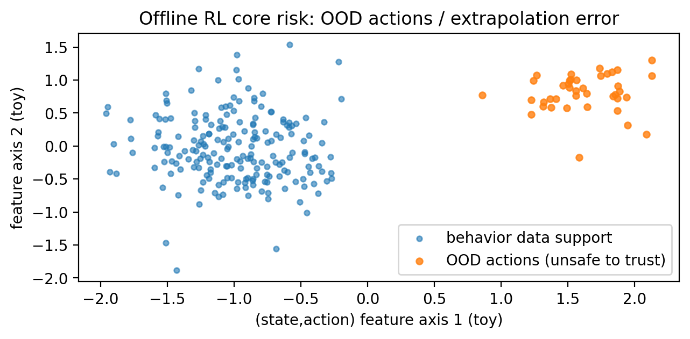

06 · 离线 RL（Offline RL）与离线评估（OPE）：只有历史数据也能学¶
这一章目标：理解离线 RL 最大风险——分布外（OOD）动作，以及为什么评估比训练更难。
核心概念: OOD 风险、重要性采样、Doubly Robust 图解:
figures/06_offline_ood.png
0. 离线 RL 的核心风险：学到数据没覆盖的动作¶

flowchart LR
D["离线数据集 D\n(来自行为策略 b)"] --> train[训练 Q / π]
train --> pi[目标策略 π]
pi -->|选择 OOD 动作 | ood[数据未覆盖区域]
ood -->|"Q 估计不可靠\n误差被放大"| risk[上线风险]
D -->|数据支持区域 | safe[更可信]1. 生动案例：医疗治疗策略能不能"在线探索"？¶
医疗决策是典型的"不能乱试"的场景：
| 场景 | 能否在线探索 | 原因 |
|---|---|---|
| 游戏 AI | ✅ 可以 | 失败成本低，可无限重试 |
| 机器人控制 | ⚠️ 谨慎 | 硬件损坏风险 |
| 医疗决策 | ❌ 不可以 | 人命关天，伦理限制 |
| 推荐系统 | ⚠️ 有限 | 用户体验影响收入 |
离线 RL 的价值：
在不能/不便在线探索的场景，从历史数据中学习最优策略
2. 离线 RL 和离策略 RL 的区别¶
很多人容易混淆：
| 概念 | 层面 | 含义 | 例子 |
|---|---|---|---|
| 离策略 (Off-policy) | 算法 | 学习目标策略≠行为策略 | Q-learning |
| 离线 (Offline) | 数据 | 不能再与环境交互 | 医疗日志学习 |
关键区别：
离线 RL 比普通 off-policy 更难，因为你无法补充缺失的数据覆盖
3. 离线 RL 的核心难点：OOD（Out-of-Distribution）¶
问题根源：
- 离线数据只覆盖了行为策略 b 做过的动作
- 如果学出的目标策略 π 喜欢选 b 没做过的动作
- 你对这些动作的 Q 值估计完全可能是"瞎猜"
误差放大机制：
一句话：离线 RL 的灾难，常常来自"对数据没覆盖的地方过度自信"。
4. 常见离线 RL 的解决思路¶
| 方法 | 核心思想 | 优点 | 局限 |
|---|---|---|---|
| Behavior Cloning (BC) | 模仿历史行为 | 安全 | 无法超越数据 |
| Conservative Q-Learning (CQL) | 对 OOD 动作惩罚 | 理论保证 | 可能过于保守 |
| IQL (Implicit Q-Learning) | 避免显式 max | 实用效果好 | 实现复杂 |
| BCQ | 限制动作范围 | 简单直观 | 需要生成模型 |
共同点：
让学习到的策略别偏离数据太远，或者对偏离数据的动作更不信任
5. 不上线怎么评估？OPE（Off-Policy Evaluation）¶
OPE 的任务：
- 只用离线数据
- 估计目标策略 π 的期望回报
- 不实际执行 就能知道策略好不好
5.1 重要性采样（IS / WIS）¶
核心：用概率比把数据从 b 的分布"改装"成 π 的分布
| 优点 | 缺点 |
|---|---|
| 理论上无偏 | 方差可能爆炸 |
| 不需要环境模型 | 长序列权重连乘→不稳定 |
5.2 模型法（Model-based OPE）¶
核心：学一个环境模型（Dynamics + Reward），然后在模型里模拟 π
| 优点 | 缺点 |
|---|---|
| 可能更低方差 | 模型误差会累积 |
| 可以生成无限数据 | 需要额外训练模型 |
5.3 Doubly Robust（DR）⭐ 推荐¶
核心：把 IS 和模型法组合
为什么叫"Doubly Robust"：
只要模型或 IS 有一个是对的，估计就是一致的
6. 本仓库提供的"概念演示版"流程¶
我们在 gridworld 里：
1. 用一个行为策略生成日志数据集 data/offline_grid.csv
2. 用 toy 版 IS/DR 展示 OPE 的结构
文件：
- code/offline/make_offline_dataset.py — 生成数据集
- code/offline/ope_is_dr.py — OPE 评估
运行：
# 1. 生成离线数据集
python3 code/offline/make_offline_dataset.py
# 2. 运行 OPE 评估
python3 code/offline/ope_is_dr.py
输出示例：
离线 RL 与 OPE 演示
==================
数据集统计:
- 总样本数：1000
- 行为策略 ε: 0.3
- 平均回报：-1.23
OPE 评估结果:
- IS 估计：-0.95
- DR 估计：-1.02
- 真实值： -1.05
注意：这里的 IS/DR 为了可读性做了大幅简化（按 one-step 示意）。
7. 小练习¶
- 改变行为策略：让行为策略更随机（ε 更大），OPE 会更容易还是更难？为什么？
-
提示：更随机 → 覆盖更广 → IS 权重更稳定
-
激进的目标策略：让目标策略更"激进"（更多选择数据里没出现的动作），评估会更不稳定吗？
-
提示：OOD 动作增多 → IS 权重方差增大
-
实现 CQL：尝试添加一个简单的保守惩罚项
-
提示：对数据中不常见的动作，Q 值减去一个惩罚
-
比较 IS 和 DR：在不同样本量下，哪种方法更稳定？
8. 进一步阅读¶
| 资源 | 说明 |
|---|---|
| CQL 论文 | Conservative Q-Learning 原论文 |
| IQL 论文 | Implicit Q-Learning |
| D4RL Benchmark | 离线 RL 标准数据集 |
| OPE 综述 | Off-Policy Evaluation 全面介绍 |